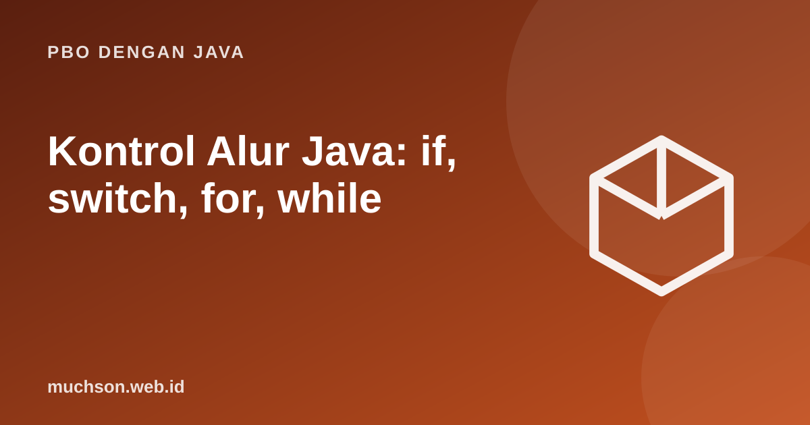

Beranda › Artikel › PBO dengan Java
PBO dengan JavaKontrol Alur Java: if, switch, for, while
Program yang berguna harus bisa memutuskan dan mengulang. Java menyediakan if dan switch untuk memilih jalur, serta for, while, dan do-while untuk berulang. Java modern juga menambahkan ekspresi switch yang lebih aman dan ringkas.
Sebaiknya sudah paham: tipe data dan operator Java

Tujuan belajar
Setelah membaca dan mencoba materi ini, Anda mampu:
- menulis if/else bertingkat dan ekspresi ternary
- memakai switch klasik dan ekspresi switch modern
- memilih for, while, atau do-while sesuai kebutuhan
- memakai break, continue, dan label dengan tepat
- menghindari kesalahan umum seperti off-by-one dan fall-through
Percabangan: if
public class Main {
static String grade(int nilai) {
if (nilai >= 85) return "A";
else if (nilai >= 70) return "B";
else if (nilai >= 55) return "C";
else return "D";
}
public static void main(String[] args) {
int[] nilai = {92, 74, 55, 30};
for (int n : nilai) {
System.out.println(n + " -> " + grade(n));
}
int umur = 17;
String status = (umur >= 17) ? "boleh membuat KTP" : "belum";
System.out.println(status);
}
}92 -> A
74 -> B
55 -> C
30 -> D
boleh membuat KTP
switch klasik dan jebakan fall-through
public class Main {
public static void main(String[] args) {
int hari = 3;
switch (hari) {
case 1:
System.out.println("Senin");
break;
case 2:
System.out.println("Selasa");
case 3:
System.out.println("Rabu"); // tanpa break, lanjut ke case berikutnya
case 4:
System.out.println("Kamis");
break;
default:
System.out.println("lainnya");
}
}
}Rabu
Kamis
Ekspresi switch modern
public class Main {
public static void main(String[] args) {
for (int bulan : new int[]{2, 4, 12}) {
int hari = switch (bulan) {
case 1, 3, 5, 7, 8, 10, 12 -> 31;
case 4, 6, 9, 11 -> 30;
case 2 -> 28; // abaikan tahun kabisat
default -> throw new IllegalArgumentException("bulan tidak valid");
};
System.out.println("bulan " + bulan + ": " + hari + " hari");
}
}
}bulan 2: 28 hari
bulan 4: 30 hari
bulan 12: 31 hari
Perulangan
| Jenis | Kapan dipakai | Pola |
|---|---|---|
| for | Jumlah iterasi diketahui | for (int i = 0; i < n; i++) |
| for-each | Menelusuri larik atau koleksi | for (T x : koleksi) |
| while | Berulang selama kondisi benar | while (kondisi) { ... } |
| do-while | Minimal satu kali dijalankan | do { ... } while (kondisi); |
public class Main {
public static void main(String[] args) {
// for: tabel kuadrat
for (int i = 1; i <= 5; i++) System.out.print(i * i + " ");
System.out.println();
// while: jumlah digit
int n = 4821, jumlah = 0;
while (n > 0) { jumlah += n % 10; n /= 10; }
System.out.println("jumlah digit: " + jumlah);
// do-while: dijalankan minimal sekali
int k = 10;
do { System.out.println("k = " + k); k++; } while (k < 5);
// break & continue
for (int i = 1; i <= 10; i++) {
if (i % 2 == 0) continue; // lewati genap
if (i > 7) break; // berhenti
System.out.print(i + " ");
}
System.out.println();
}
}1 4 9 16 25
jumlah digit: 15
k = 10
1 3 5 7
Perulangan bersarang dan label
public class Main {
public static void main(String[] args) {
for (int baris = 1; baris <= 4; baris++) {
for (int kolom = 1; kolom <= baris; kolom++) System.out.print("*");
System.out.println();
}
// label: keluar dari dua perulangan sekaligus
int[][] m = {{1, 2, 3}, {4, 5, 6}, {7, 8, 9}};
cari:
for (int[] baris : m) {
for (int x : baris) {
if (x == 5) { System.out.println("ditemukan 5"); break cari; }
}
}
}
}*
**
***
****
ditemukan 5
Jebakan umum
Kesalahan off-by-one: untuk larik berukuran n, indeks sah 0 sampai n−1. Memakai i <= n memicu ArrayIndexOutOfBoundsException. Pakai for-each bila indeks tidak diperlukan.
Latihan mandiriCoba kerjakan dulu sebelum membuka jawaban.
1. Tulis FizzBuzz 1..15 dengan for dan if.
Cek kelipatan 15 lebih dulu, lalu 3, lalu 5, selain itu cetak angkanya.
2. Tulis perulangan yang menjumlahkan bilangan 1..100.
Hasil 5050; for dengan jumlah += i.
3. Ubah grade() memakai ekspresi switch? Mengapa tidak cocok?
Switch bekerja pada nilai diskret; rentang nilai lebih alami memakai if/else atau switch dengan pola dan guard pada Java modern.
4. Cetak segitiga bintang terbalik 4 baris.
Perulangan luar turun dari 4 ke 1, perulangan dalam mencetak sebanyak nomor baris.
Ringkasan
- if/else untuk keputusan, ternary untuk ekspresi singkat.
- Ekspresi switch modern dengan -> lebih aman daripada switch klasik.
- for untuk jumlah pasti, while untuk kondisi, do-while minimal sekali.
- break, continue, dan label mengatur lompatan; awas off-by-one.
Tanya jawab
Apakah switch bisa dipakai untuk String?
Ya, sejak Java 7. Java modern juga mendukung pencocokan pola pada switch.
Kapan memakai for-each?
Bila hanya perlu membaca elemen tanpa indeks. Jika perlu mengubah elemen larik atau memerlukan indeks, pakai for biasa.
Bagaimana menghindari perulangan tak berhingga?
Pastikan variabel dalam kondisi berubah menuju kondisi berhenti di setiap iterasi.
Referensi
- Oracle: Control Flow Statements
- dev.java: Switch Expressions
- The Java Language Specification
- Sedgewick dan Wayne, Introduction to Programming in Java